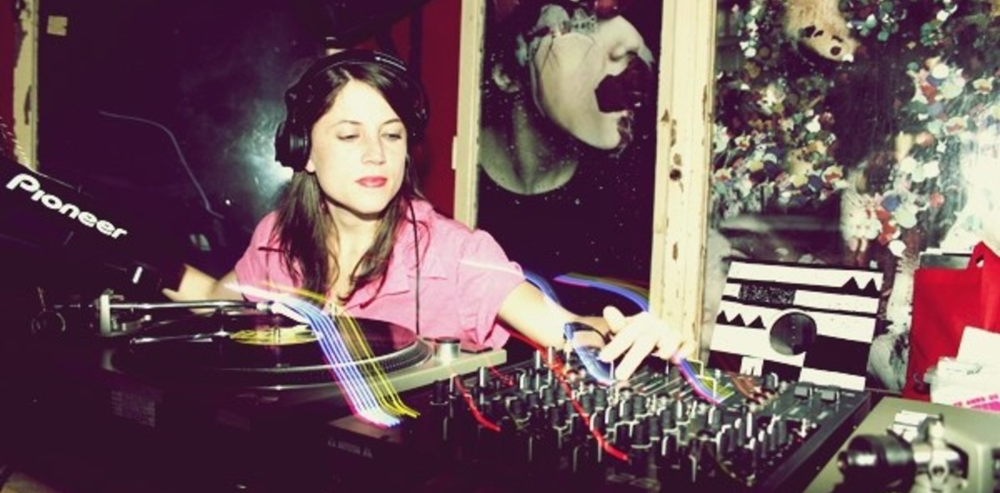

ARGENTINAS
Las mujeres argentinas no se quedan atrás en el desarrollo de la música electrónica, siendo pioneras y abriendo camino en la región.
Primeras vanguardias y tecnología (mediados del siglo XX)
Aunque la música electrónica como escena club todavía no existía, las mujeres participaron activamente en los primeros desarrollos de música electroacústica y experimental. A nivel internacional, compositoras como Delia Derbyshire (vinculada al BBC Radiophonic Workshop) o Daphne Oram fueron pioneras en la manipulación de cintas y generación electrónica de sonido. Estas experiencias influyeron en los desarrollos académicos y experimentales en América Latina.
En Argentina, el surgimiento del Centro Latinoamericano de Altos Estudios Musicales del Instituto Torcuato Di Tella en los años 60 marcó un punto clave para la experimentación sonora. Allí, compositoras e investigadoras participaron en entornos donde la tecnología (cintas, osciladores, sintetizadores tempranos) comenzaba a ser parte de la creación musical, aunque en un contexto todavía fuertemente masculinizado.
Años 70–80: experimentación, dictadura y underground
Durante la última dictadura (1976–1983), gran parte de la experimentación cultural quedó relegada al ámbito privado o semiclandestino. Las mujeres participaron en circuitos alternativos, muchas veces vinculadas al arte contemporáneo, la performance y el teatro experimental, donde la electrónica comenzaba a aparecer como recurso estético.
En paralelo, a nivel global, el surgimiento del synth pop, el techno y el house —especialmente en Detroit y Chicago— abrió un nuevo paradigma: la tecnología como herramienta accesible de producción musical. Este modelo influyó en la juventud urbana argentina hacia fines de los 80, cuando comienza a gestarse una escena electrónica ligada a clubes y fiestas.
Años 90: consolidación de la escena electrónica argentina
La década de 1990 fue decisiva. Con la reapertura democrática ya consolidada y en un contexto de globalización cultural, Buenos Aires se convirtió en un polo importante de música electrónica en América Latina.
Clubes como Cemento y Pacha Buenos Aires funcionaron como espacios de difusión y profesionalización. En este período emergieron mujeres DJs que comenzaron a ganar visibilidad en cabinas tradicionalmente dominadas por varones. Una figura central fue Romina Cohn, considerada pionera en la escena techno local, cuya trayectoria desde mediados de los 90 ayudó a legitimar la presencia femenina en el circuito profesional.
Sin embargo, la participación femenina seguía siendo minoritaria y muchas veces atravesada por estereotipos: la mujer como “figura decorativa” más que como productora o técnica. A pesar de ello, varias artistas comenzaron a formarse en producción musical, operar equipos, programar sintetizadores y consolidar carreras sostenidas.
Finales del siglo XX: gestión, redes y transformación cultural
Hacia fines de los 90, además de la figura de la DJ, las mujeres empezaron a ocupar roles en la organización de fiestas, la producción de eventos y la gestión cultural. Este trabajo fue clave para expandir la escena más allá del centro porteño y para construir redes colaborativas.
En paralelo, a nivel internacional surgieron plataformas como Female Pressure (fundada en 1998), que visibilizaron la desigualdad de género en la música electrónica y comenzaron a producir estadísticas y redes de apoyo. Estas discusiones influyeron posteriormente en el contexto argentino del siglo XXI.
Actualmente, el rol de las mujeres en la música electrónica argentina no solo se centra en ocupar espacios, sino en transformarlos: problematizan las dinámicas de poder en cabinas y festivales, impulsan pedagogías colaborativas y promueven una ética de cuidado en la escena nocturna. Su aporte no es únicamente cuantitativo, sino también estético y político: han ampliado el imaginario sonoro y social de la electrónica en Argentina, aportando nuevas narrativas, sensibilidades y formas de producción cultural.


Ana Helder